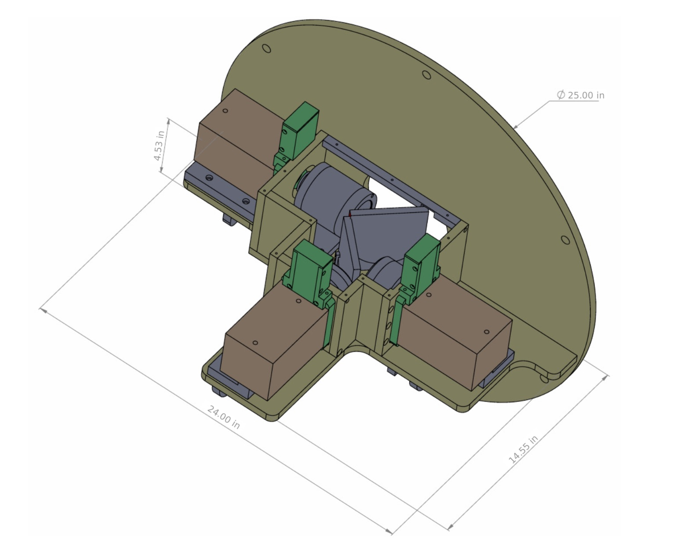
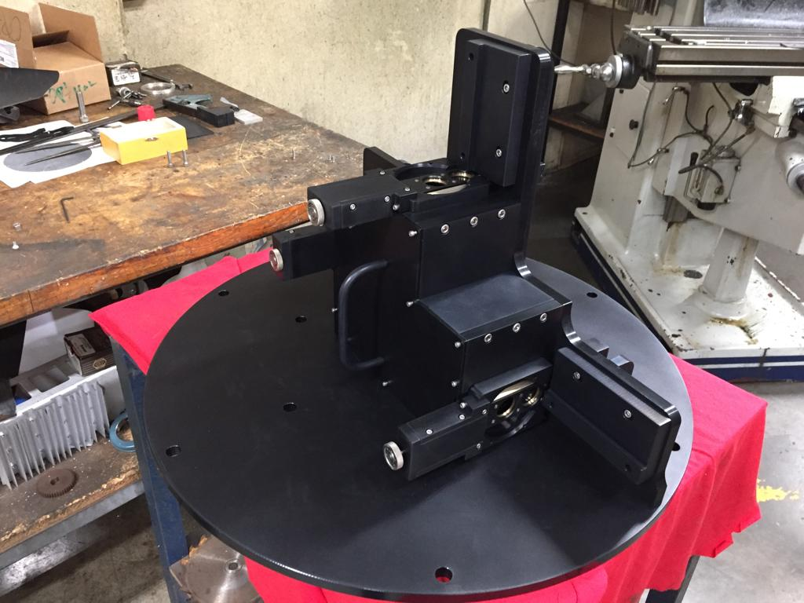

The instrument paper has been accepted for publication
at the Revista Mexicana de Astronomía y Astrofísica (Rev. Mex. A. A.). You can download the paper at
the arXiv:
Transient astrophyical events are old as astronomy itself. The appearance of new objects in the sky caught the attention of ancient astronomers, which records still last (like the supernovae that created the Crab Nebula). In most cases, such events were visible for days and up to weeks.
Right: Heinrich III. sieht den neuen Stern über der Stadt Tivoli (Tyburtina), source Wikipedia Left: Crab nebula
However, many astrophysical processes occurr on shorter time scales (on the order of milliseconds to seconds) and have only recently been observed thanks to the advent of new technologies, allowing multi-wavelength high-cadence photometric measurements. As a consequence of these advances, along with the development of new observational techniques, time-domain astronomy has become a strong emerging area in modern astrophysics.
A new camera to probe the shortest timescales
As part of this new generation of time-domain instruments, we present OPtical TIming CAMera (OPTICAM), a new high-speed, triple-beam, optical imaging system developed through a collaboration between reearch teams at the Universidad Nacional Autónoma de México (UNAM) and the Astronomy Group at the University of Southampton (AG-UoS) in the United Kingdom.
OPTICAM will be equipped with a set of Sloan Digital Sky Survey (SDSS) filters and three 2,048 × 2,048 sCMOS detectors which allows for sub-second integration times with negligible read-out overheads. The use of two dichroics will allow simultaneous in three different bands providing a broad wavelength coverage across the optical spectrum.

Mechanical design of OPTICAM (left). OPTICAM in the final stages of assembly at the mechanical workshop in Ensenada, Mexico (right). Credit: G. Sierra IA-UNAM.
Future is fast and bright
OPTICAM is expected to have first light in the fall 2019 at the Observatorio Astronómico Nacional. We will perform comissioning observations and perform tests on site usign the 2.1 m telescope. Stay tune for the first light curves of OPTICAM!


.jpg){kind=link}